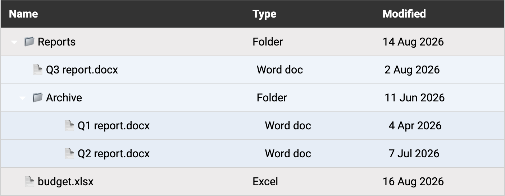

Using a treegrid example
In my last article, I focussed on understanding aria-level. The third example in the article outlined a treegrid that displayed a full file structure.
This file structure included icons for file types and indentation to show different levels. But these were all visual. In the markup, each row was just a series of <div> elements with no structure or meaning.
aria-level was used to inform assistive technologies of the level of each row.

Let's use a simpler example:
Documents (aria-level="1")
Reports (aria-level="2")
Report A (aria-level="3")
Report B (aria-level="3")
Notes (aria-level="2")
Note A (aria-level="3")
Note B (aria-level="3")
Note C (aria-level="3")In this example, "Documents" is level 1, "Reports" is level 2, and "Report A" and "Report B" are level 3.
"Report A" and "Report B" form a set: items that share the same parent and sit at the same aria-level.
Providing information about sets
Imagine navigating down each row and having to maintain a mental model of each row, its level, and whether there are other items at the same level or in the same set.
aria-posinset and aria-setsize provide key information:
aria-posinsetdefines the position of the current item within the set.aria-setsizedefines the total number of items in the set.
They are almost always used together. A position on its own doesn't mean much without a total to compare it to, and a total on its own doesn't tell you where you are within it.
So, "Report A" would be:
aria-posinset="1": the first item in the setaria-setsize="2": in a set of 2
And "Report B" would be:
aria-posinset="2": the second item in the setaria-setsize="2": in a set of 2
When we move to "Note A", we are now in a new set of three, so "Note A" would be:
aria-posinset="1": the first item in the setaria-setsize="3": in a set of 3
Where can these two attributes be used?
These attributes can be used on roles that represent items within a set, including:
articlecommentlistitemmenuitemmenuitemcheckboxmenuitemradiooptionradiotabtreeitemrow, but only when that row sits inside atreegrid
They are added to the individual items, not to the container that holds them.
That last one catches people out. row can also appear in an ordinary table or grid, but aria-posinset and aria-setsize don't apply there, only when the row descends from a treegrid.
Things to be aware of
aria-posinset starts at 1, not 0.
The position should also make sense compared with the set size. For example, aria-posinset="12" would not make sense with aria-setsize="10".
If the total number of items is genuinely unknown, aria-setsize="-1" can be used.
For ordinary grids and tables, aria-rowindex and aria-rowcount are usually preferred. aria-posinset and aria-setsize have a more specific use for rows in a treegrid.
These attributes should not be used when the browser already has enough information to calculate the position and set size itself. Their main purpose is to provide information that is missing from the DOM.
Takeaway
Use aria-posinset and aria-setsize to tell assistive technologies where an item sits within a set when that information cannot be worked out from the DOM.